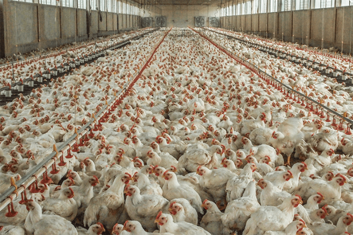
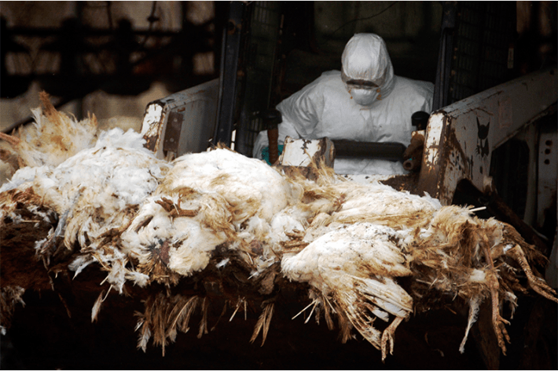

Since the COVID-19 pandemic, few scientific questions have received as much public attention as the origin of the deadly virus: people or nature. It was the subject of journalists’ investigations and government hearings and academic recrimination; it became part of the culture war. It is perhaps strange, then, that little attention is paid to the role people have played in another potential pandemic virus: H5N1 avian influenza, a creation of modern poultry production systems.
The earliest forms of H5N1 were identified nearly three decades ago in Guangdong, China, a region rapidly adopting the industrial husbandry practices common to North America and western Europe. A subsequent outbreak in Hong Kong infected 18 people, six of whom died; the virus did not transmit easily between humans and was soon contained, but H5N1 was not extinguished. Since then, it has spread around the planet, leaving mountains of chicken carcasses in its wake, and also silent seabird colonies and beaches covered with dead seals. H5N1 has killed 464 people so far—not a large number, but the possibility of it becoming better at infecting humans is ever-present. The historical precedents are grim.
The first modern influenza pandemic, in 1918, killed an estimated 50 million people. Several million people died in the pandemics of 1957 and 1968, and the 2009 H1N1 pandemic killed about 350,000 people in its first year. During the latter pandemic, the virologist Yi Guan—renowned for helping contain the 2003 SARS outbreak—said that if H1N1 and H5N1 mixed, he would “retire immediately and lock myself” in a high-security lab for protection. And as the Covid pandemic showed, even a disease with relatively low mortality rates can be cataclysmic.
Eighty-five percent of all eggs come from operations containing between 50,000 and 6 million hens.
In 2021, H5N1 reached North America, setting off a viral blaze in poultry—more than 150 million chickens and turkeys have been killed to date, either by the virus or in efforts to curb its spread—and infecting both wild birds and mammals at unprecedented rates. H5N1 is now rampant in cows, a species not previously known to be infected, raising fears that viruses adapting to them might become more infectious to humans.
That sort of adaptation is even more likely, of course, when H5N1 spills into humans, which is happening with disturbing frequency. In June 2024, a total of three H5N1 infections had been reported in the United States; seven months later, that number stood at 67. Although symptoms remain mild, and the virus still does not transmit easily between us, scientists are spooked. Those I talked to for this story used phrases like “red lights flashing,” “totally novel ballgame,” “no hope of containing,” and “under attack.”
Media coverage of H5N1 captures this urgency but tends to focus on the day-by-day—the latest “depopulation,” as mass exterminations at poultry facilities are known, the latest sick cows or dead cats, the latest mutations. Lost in the furor is a clear sense of where H5N1, and the class of influenzas to which it belongs, comes from: the evolutionary crucible of intensive animal production.
In the facilities—the artificial ecosystems—that now house much of Earth’s terrestrial vertebrate biomass, constraints on virulence that prevail in natural ecosystems are not merely removed. Virulence is actually favored. In the words of Mark Woolhouse, an epidemiologist at the University of Edinburgh, the viruses are “a response to the selection pressures that exist in a human creation: the modern poultry farm.”
Each spring millions of birds gather at Lake Chany, a 660-square-mile shallow lake and surrounding wetlands in the steppe of southwestern Siberia. The complex supports an estimated 20,000 waterbird populations—not individual birds, but entire communities—whose migratory routes span much of Africa, Europe, and Asia. To a virologist this is as much a gathering of influenza, which is ancestral to birds and especially waterfowl.
“There was continual influenza virus circulation in waterfowl long before humans even existed,” says Jan Slingenbergh, a now-retired disease ecologist who once worked for the United Nations Food and Agriculture Organization, where he headed a program that helped member countries control emerging animal-borne diseases.
When I ask Slingenbergh about influenza evolution, he starts by describing Lake Chany and how, for one month each year, after the breeding season ends and before autumn migration begins, flu viruses emerge from dormancy and replicate in the far end of the birds’ gastrointestinal tracts. After being defecated into the water the viruses are picked up by other birds, who will soon carry them far and wide. That exquisite timing, what Slingenbergh calls the “finesse and subtlety” by which influenzas merge with the birds’ life history, speaks to millions of years of coevolution. So does the fact that—at least until recently—influenzas caused almost no disease in their avian hosts.
“The virus has evolved beyond requiring damage to the host,” explains Slingenbergh. “It is a dream scenario that would have fascinated Darwin.” The viruses do continue to evolve: As those trillions upon trillions of virus particles replicate in Lake Chany’s waterfowl they accumulate mutations and even swap gene segments. Nevertheless they remain pacific; infections do not damage tissue, and infected birds show few symptoms.
This makes intuitive sense. Viruses that leave birds healthy, moving about and flying halfway around the world, reproduce more than viruses that endanger their hosts and thus limit their own opportunities. If a strain turns deadly or incapacitating, it ultimately harms itself. Survival of the fittest in this case means doing no harm. “This is the starting point. This is where we come from. This is the default host-virus interactivity scenario,” Slingenbergh says.

NATURAL STATE:Avian influenza viruses are endemic in wild aquatic birds, with whom they have coevolved for millions of years. They cause minimal disease; damaging their hosts would impair their own spread. Photo by Delmas Lehman / Shutterstock.
Scientists call these viruses Low Pathogenic Avian Influenza (LPAI). Should a strain evolve to be extremely harmful in chickens, it’s classified as Highly Pathogenic Avian Influenza (HPAI). Those descriptors, it should be stressed, refer to their consequences for chickens; an HPAI that kills a flock in a few hours might cause no problems for a human, and vice versa. LPAIs can be quite dangerous to us, as with an H7N9 strain that emerged in China in 2013, infecting at least 1,568 people and killing 616 of them even as it went undetected in poultry farms.1
With that said, HPAIs are uniquely concerning. They tend to infect birds’ respiratory tracts and become airborne, and the sheer number of viral particles generated by an infection raises the chance of an exposed human catching it, even if the virus is not very contagious to us. Meanwhile, every replication rolls the dice on a virus acquiring a mutation that pushes it closer to human infectiousness. It’s a numbers game. And if an influenza strain infects someone—or a pig, a species routinely described as a mixing vessel for flu—already infected by another strain, the strains might exchange genetic material, producing a new variant that combines the worst of each.
None of this is guaranteed to happen, but it becomes more likely when an LPAI strain evolves into an HPAI—an evolutionary jump documented 39 times between 1959 and 2016. Thirty-six of those jumps were reported in commercial poultry production systems.2 Of the other three, one was detected in wild terns and two in backyard chicken flocks, both of which were located in regions of intensive poultry production—suggesting that the highly pathogenic strains spilled into the backyard flocks rather than originating there.
“This was most frequently happening in commercial settings,” says Marius Gilbert, an epidemiologist at the Free University of Brussels who analyzed the incidents. Although Gilbert acknowledged that detection bias could explain the pattern—it’s easier to dispose of a few dead backyard chickens without attracting notice than to bury several thousand—and HPAIs could conceivably arise unnoticed in small flocks and make their way into large operations, he does not think that happened. In commercial systems, Gilbert says, “you facilitate the Darwinian selection from an LPAI into an HPAI.”
“If we wanted to design how to make great virulence, this would be how.”
In intensive poultry production facilities—factory farms, in everyday language—thousands of birds are packed together, making it easy for pathogens to pass between them. Their immune systems may be suppressed by antibiotics and environmental stresses: toxic air, overcrowding, lack of sunlight, physical deformities induced by breeding for accelerated growth, and their own cacophony. The birds are also genetically similar, meaning that a virus capable of evading one bird’s defenses can probably evade many of them.
The conditions are ripe for a virus to spread—and speed is at a premium. A century ago, chickens were killed for meat at about 16 weeks of age; nowadays that number is closer to six weeks, and sometimes just four. “We’re turning over these birds faster and faster. And there’s an evolutionary argument that the shorter-lived your host is, the more virulent you can afford to be, because you might not kill it by the time it’s died anyway,” says Woolhouse. With so little time available to transmit and replicate, a virus that moves slowly is at a disadvantage.
“The virus responds to those pressures, and the consequence of that is to become more virulent,” Woolhouse says. He and infectious disease modeler Katherine Atkins, also at the University of Edinburgh, studied those dynamics in Marek’s disease, a viral affliction of poultry that has become more virulent in the past several decades. Their findings don’t prove that rapid turnover times drove virulence, he says, but “the data were consistent.”
Gilbert pointed to several studies that complement these observations and proposed mechanisms. In one, researchers conducted a “serial passage”—infecting a chick, taking the resulting virus and infecting another chick with it, and repeating—that mimics what happens in commercial systems. The original flu strain came from wild swans, didn’t infect chickens well, and didn’t harm those it did infect; within a couple dozen generations it had a 100 percent mortality rate. In another study, researchers tracked LPAIs evolving into HPAIs on farms in northern Italy—a process documented in even more granular detail on a single farm in the United Kingdom in 2008.
Now all the pieces are there: the landscape-scale correlations between commercial settings and pathogenicity; mechanisms to explain these correlations; experimental demonstration; and on-the-farm observations. Put them together, says Gilbert, “and you have a full story.”
A century ago, the average American chicken flock contained 70 birds. It was a time of backyard coops and small farmers, before consolidation and vertical integration and the methods that accompanied them. Nowadays the 9 billion chickens slaughtered for meat each year in the U.S. are raised in buildings containing, on average, 20,000 or more birds, with roughly one square foot of space apiece. Even cage-free facilities often house between 50,000 and 75,000 chickens, and 85 percent of all eggs come from operations containing between 50,000 and 6 million hens. As for pigs, the average herd numbers more than 1,000 animals.
“If we were to get our drafting table up here, and we wanted to design how to make great virulence, this would be how,” says Rob Wallace, an evolutionary ecologist and author of Big Farms Make Big Flu. “The sky is the limit.” Wallace suggests we think of poultry not only as food for humans, but as “food for flu.”
In 2009, Wallace wrote a paper in the journal Antipode entitled “Breeding Influenza: The Political Virology of Offshore Farming.” Although there are hundreds if not thousands of scientific papers analyzing the genetic origins of H5N1 since it was first detected in 1996 in Guangdong, China, Wallace’s account is among the few to describe the social and economic context of its emergence.
For centuries, Guangdong, a coastal province, had been known for poultry production, with flocks of domestic ducks, geese, and chickens raised side-by-side with wild fowl in a mosaic of rice paddies and small ponds. Industrial farming methods arrived in the 1970s, and the burgeoning intensification accelerated as China slowly embraced capitalism and opened some regions to foreign investment. Just as Shenzhen, then a small city in Guangdong, became a center of electronics manufacturing, other parts of the province became hubs of modern poultry production; poultry exports swelled from $6 million in 1992 to $774 million in 1996, and chicken production doubled in that time. Many of the province’s 700 million broiler chickens lived in operations housing 10,000 or more birds.

MODERN CHICKENS:An estimated 70 billion chickens are killed for meat every year. In developed countries, the chickens typically live in facilities like this broiler farm in northern Italy. Photo by Selene Magnolia Gatti / We Animals.
In a xenophobic era, this is a potentially sensitive topic, and Wallace stresses that blaming China or Guangdong’s farmers is misleadingly simplistic. “Foreign direct investment coming in from different places around the world—London, Hong Kong, New York—basically helped drive the shifts” in animal production, he says. And of course the model they supported was developed in the U.S. and western Europe.
Guangdong was a particularly risky place for this to happen. Already the region was known as a hotbed of influenza, which circulated year-round between domestic birds and their wild kin; it’s also part of a bird migration corridor between Arctic breeding areas and wintering territories in South Asia and the Indonesian archipelago. When a University of Hong Kong virologist named K.F. Shortridge surveyed Guangdong’s poultry markets in the early 1980s, the extraordinary diversity of influenza viruses he found there, combined with the region’s dense human populations intermingled with domestic and wild fowl, led him to write that Guangdong “would be an ideal situation for an avian influenza virus to cross the species barrier to man.”
In the spring of 1996, in the town of Sanshui, about 50 miles west of the capital of Guangzhou, an outbreak occurred in farmed geese. Scientific accounts provide little detail, but one mentions that “symptoms included bleeding and neurological dysfunction.” The mortality rate was 40 percent. Virologists tested the birds and identified the culprit: an H5N1, not previously documented, which they called influenza A/Goose/Guangdong/1/96 (H5N1).
Later analysis showed that it likely descended from a low-pathogenic strain that somehow found its way into poultry, in whom it became highly pathogenic after evolving to attack many cell types rather than a few. For the moment, though, no more outbreaks were reported. Influenza surveillance programs failed to detect the strain elsewhere, a calm that lasted until the following spring, when a virus from the same lineage burned through several poultry operations in Hong Kong. In the interim, it had reassorted with other strains and become even more transmissible.
The symptoms were horrific. Infected birds bled from their tracheas and rectums, turned blue from oxygen deprivation, and hemorrhaged internally. The virus also infected humans. The first victim was a 3-year-old boy admitted to a Hong Kong hospital in May; his lungs filled with fluid, his brain swelled, his kidneys and liver failed, and within days he was dead. In December, 17 more people became infected. Five died.
This was shocking, and not only because the disease was so severe. Avian influenzas were not supposed to infect humans at all. The infections “reshaped the central dogma of influenza ecology, which used to indicate that influenza A virus must first adapt to swine … before infecting human,” wrote Xiu-Feng Wang, a virologist at the University of Missouri.
Fortunately that strain did not transmit easily between humans. The cases were traced to exposures in Hong Kong’s poultry markets, and authorities ordered the immediate slaughter of 1.5 million birds and suspended all live poultry trade. They succeeded in stopping the outbreak—no more human cases were reported, and the strain was seen only once more. But other descendants of the original H5N1 had quietly become established in domestic geese. They would spawn an influenza unlike any other.
Between 2001 and 2003, H5N1 continued to cause sporadic outbreaks in domestic and wild birds. In 2004, it surged across east and southeast Asia, and though only two human infections were reported, fears grew that it might adapt to us. “We are talking at least 7 million” human deaths, warned Shigeru Omi, the World Health Organization’s western Pacific director, “but maybe more—10 million, 20 million, and the worst case, 100 million.”
H5N1 did not acquire the traits necessary to make Omi’s forebodings come true, but it decimated poultry in Thailand and Vietnam, where more than 100 million domestic birds died from the virus or were killed in control efforts. In May of 2005, H5N1 caused a mass die-off of wild bar-headed geese and other birds in China’s Qinghai Lake, an important migratory stopover point. The outbreak was initially blamed on wild birds, although goose farms were later implicated, too. Migrating birds soon carried it across the continent.
Within months, the Qinghai lineage of H5N1 spread across northeast China, northern Mongolia, and southern Russia. The virus was not always so deadly to wild birds as it was to domestic fowl, and so the region’s vast waterfowl breeding areas amplified its spread, which by 2006 also included much of Europe, the Middle East, and Africa. Already the panzootic—meaning pandemic, but in non-human animals—was recognized as unprecedented. It was just getting started.
H5N1 is a full-blown conservation crisis.
Over the next decade, H5N1 proliferated through Eurasia and Africa. It diversified in dizzyingly complicated ways; the original H5N1 trunk branched into a great tangled phylogenetic tree as mutations and genetic segments from other strains accumulated. It gave rise to the so-called H5NX viruses—H5N2, H5N3, H5N5, H5N6, H5N8, H5N9—which evolved on their own trajectories and spawned new forms that crossed with the old ones. A web of influenzas descended from H5N1 now covered the world, frightening scientists and public health officials who sounded alarms and tried to contain the spread.
But containment was a Sisyphean task. Viruses teemed in the bodies of dead birds and also in their waste, which is often spread as fertilizer on farmland. There it can survive for months, exposing foraging birds and leaching into streams for waterfowl to pick up. Stricter security and hygiene at animal production facilities helped, but it’s practically impossible to sterilize every surface, much less seal buildings from the outside world. During a 2004 outbreak in Kyoto, Japan, H5N1 was found on nearby flies; during the U.S. outbreaks of H5N2 in 2015, infections were linked to the airborne spread of viral particles emitted by the ventilation systems of Midwestern poultry operations. And though wild birds carried H5N1 and other flu strains across long distances, regional spread between farms was driven primarily by the poultry trade.
By the late 2010s, two of those H5NX offshoots, H5N6 and H5N8, had supplanted H5N1 worldwide. But in 2021, a new H5N1 subtype underwent what virologists called an “explosive geographic expansion” across Europe, Asia, and Africa. In northwestern Europe, it caused mass die-offs in sandwich tern colonies, killing an estimated three-quarters of the breeding population, and nearly every chick born that year, in just two months. That December, it killed 360 of 419 birds at a small farm in St. John’s, Newfoundland, marking the arrival—at long last—of H5N1 in the Americas.
It spread south and west, once again branching and diversifying. By the end of 2022, more than 50 million U.S. poultry died from the virus or were culled; veterinary scientists refined techniques for killing hundreds of thousands of birds as quickly as possible. Wild birds were afflicted, too, and in early 2023 H5N1 killed more than 200,000 cormorants, boobies, and pelicans off the coast of Peru in early 2023. Not long after, one-fifth of condors in southwest California died, and people scrambled to immunize the endangered vultures. Altogether, H5N1 has afflicted more than 200 bird species in North America and 400 bird species worldwide.
Some strains also demonstrated a newfound propensity for infecting mammals. Pinnipeds have been hit especially hard: In the summer of 2022, hundreds of harbor and grey seals in New England died from H5N1, and the following year, more than 24,000 sea lions perished along the western coast of South America. At an elephant seal colony in Argentina, H5N1 killed more than 17,500 seals, including 95 percent of all pups.
Those and other tabulations of H5N1’s wild animal mortality are by all measures a vast undercount, perhaps by orders of magnitude, as most wild animals die without being found. H5N1 is a full-blown conservation crisis. What keeps it in the news, though, is—beyond rising egg costs—the threat to humans. From that perspective the most worrisome aspect of the elephant seal die-offs was how the seals didn’t simply catch H5N1 from nearby birds. They transmitted it to each other, suggesting an ongoing refinement for mammalian immune systems.

DISEASE CONTROL:A worker from Israel’s Ministry of Agriculture and Food Security uses a forklift to transport turkeys killed during a 2006 outbreak of highly pathogenic avian influenza in Holit, Israel. Photo by ChameleonsEye / Shutterstock.
“The more chances this virus gets to replicate in mammals, the more pressure there’s going to be to change in ways that make it more risky for humans,” says Richard Webby, a virologist at the St. Jude Children’s Research Hospital. Webby worries about H5N1 spreading in pigs, those ideal mixing-vessels. That hasn’t yet happened, but in just a few years the virus has been detected in 30 mammal species in the Americas—more than it infected worldwide in two decades prior. “The altered ecology of H5N1 has opened the door to new evolutionary pathways,” wrote scientists reviewing this expansion in the journal Nature.
Some of those pathways involve cows, a species not previously known to be infected by H5N1. The first bovine outbreaks occurred in early 2024, in dairy cows in Kansas and Texas; how they acquired it is unknown, but one possible culprit was the practice of feeding chicken carcasses and their excrement to cows. That had continued, along with the use of chicken waste as fertilizer, as H5N1 spread. The virus also infected the cows’ udders, an unheard-of trait for influenza. “That is something no one would ever have predicted,” says Slingenbergh. The mortality rate was fairly low—infected cows tended to lose their appetites and produce less milk—but half the farm cats who drank the milk died, and preliminary research raises the possibility that cows are better influenza mixing vessels than expected.
Within months, H5N1 was found in milk samples from 12 states, suggesting how fast it was spreading. As of early 2025, H5N1 had been detected in 959 herds in 16 states, a number widely considered an undercount. As for chickens, H5N1 had been found in 1,490 poultry flocks spanning every U.S. state, with 150 million birds killed by the virus or to control it.
The number of human infections swelled, too. As of June 2024, the U.S. Centers for Disease Control and Prevention had documented three cases; by late January of 2025, that number had grown to 67, of which 63 were traced to cow or poultry exposures. (As most farm worker infections go unreported, the actual number is very likely higher.) So far symptoms have remained mild in humans: fever and body aches, congestion, conjunctivitis.
This contrasts with earlier stages of the H5N1 panzootic. Between 2003 and 2021 the World Health Organization documented 862 human cases worldwide, with 455 deaths. Many cases likely went undetected, meaning the actual fatality rate was far lower—but even taking that into account, the strains that proliferated in the Americas do seem less harmful, at least for now.
One person, a 65-year-old woman from Louisiana who contracted H5N1 from chickens, has died in the current outbreak. When researchers compared the viruses in her to those from her flock, they found new mutations linked to respiratory tract infection and transmission. The mutations likely arose as the virus replicated within her—a sobering reminder that although current incarnations of H5N1 are not a significant human threat, they are constantly changing.
“There are two things we don’t understand at the moment,” says Gilbert. The first is, why are human infections in the U.S. mild compared to those witnessed during the Asian H5N1 poultry epidemics. “The second question mark is, ‘What does it take?’” Meaning: Will H5N1 become highly lethal in humans?
In March 2009, a then-novel H1N1 influenza emerged in Mexico. The outbreak’s exact origin remains unknown, but the first cases occurred near industrial pig operations; genetic analyses showed links to flu strains that evolved in factory pig farms in the U.S. and western Europe, and spread via trade. In the year that followed, an estimated 12,000 Americans died from H1N1, and 350,000 people worldwide. At the time, I reported stories about poor livestock surveillance and shortfalls in antiflu drug production for humans. It didn’t occur to me to ask: If so much death is the cost of eating pigs, why eat them at all?
Fifteen years later, having mostly stopped eating animals—primarily for their sake, but environmental problems and disease risks are factors, too—this framing seems obvious to me. Perhaps that is simply my bias now. But even if it’s unlikely that many people will go vegan in the near future, a reckoning is overdue. “The very biology of influenza is enmeshed with the political economy of the business of food,” wrote Wallace in his account of H5N1’s origin decades ago in the fast-industrializing poultry systems of Guangdong.
That sensibility is not to be found in the ongoing H5N1 discourse. The news is constant—in the days it took to write this story’s final draft: H5N1 was reported in 22 U.S. poultry operations, including a Pennsylvania egg farm with 1.98 million chickens; a second cow-infecting H5N1 strain was detected; New York City closed its live bird markets; the CDC posted news of people catching H5N1 from their cats, then deleted it; and the CDC’s H5N1 policy chief resigned—but fragmentary. More in-depth stories call for better disease monitoring, vaccines, and therapeutics, and chronicle the debacle of America’s institutional responses. Scientists emphasize the control and treatment of H5N1—which is unquestionably, desperately needed, and may save thousands or even millions of human lives if it evolves to easily infect us. The essential conditions that give rise to dangerous new influenzas, however, are rarely challenged.
There is a “frustrating lack of appreciation of the social and economic drivers of industrialisation and the inevitable effects on infectious disease emergence and transmission,” says Stephen Hinchliffe, a geographer at the University of Exeter.
Perhaps some of that traces to what Hinchliffe and colleagues, writing last summer in the journal Royal Society Open Science, called “a founding myth of industrialized agriculture”: the idea of animal production units as self-contained and their pathogen flows controllable. That myth was dispelled scientifically long ago, but it retains power. I also wonder if another psychological factor is involved: a reluctance to confront the realities of animal production.
Early in the Covid pandemic, researchers led by Kristof Dhont, a psychologist at the University of Kent, surveyed several hundred people on their attitudes toward meat consumption and pandemic risks. Those who most enjoyed meat, who couldn’t imagine replacing it in their diets, were least likely to believe that factory farms caused disease—and when informed of risks, they tended to dig in and reject reforms that would reduce those risks. “People hold beliefs about meat in a protective manner and engage in a range of justification strategies,” wrote Dhont and colleagues. “Having a commitment to eating meat poses a barrier to recognizing the real-world contribution of factory farms to zoonotic disease risk.” All the usual social science caveats apply—it was only one finding, in a relatively small group—but there is plenty of research on the cognitive biases of animal consumption, and no reason to think scientists should be immune to them.
Meat is a particularly nuanced topic. Slingenbergh, who produced a United Nations report on the disease risks of animal production, felt conflicted when talking about those risks. His agency’s mission was to end starvation and malnutrition; the risks had to be weighed against the benefits for hungry people. “I was very cautious in saying aloud that the way farmers are producing animals should be considered integral to the wider problem” of disease, he says.
Wallace calls for industrial livestock to be replaced by agroecological systems in which meat comes from networks of small, locally owned farms whose practices are less likely to intensify disease. Gilbert agrees that this approach should help prevent the emergence of more virulent pathogens, and also be better for the environment and the people involved—“but of course this goes against economic forces,” he says.
In the last several decades, livestock industries in developed countries have consolidated dramatically, with fewer companies controlling ever more market share. Profit-maximizing intensive production methods go hand-in-hand with this shift. International banks continue to pour money into factory farming; even in their absence, regional banks are a source of funding.
“I’m always surprised we don’t have more outbreaks,” says Jay Graham, a public health scientist at the University of California, Berkeley, who has studied H5N1 in Thailand and farming in Ecuador. “The system is so broken.”
It’s difficult to imagine the system changing. Yet imagination is demanded, all the more so because the shift to industrialized animal production is far from complete. Though factory farming is established in developed countries, many middle-income nations are just now making the transition, and poorer countries are expected to follow. “There’s going to be lots of issues around this, because industrial ag is just taking off,” says Graham.
With luck, H5N1 will pass humanity by without ever becoming both virulent and contagious among us. Perhaps those strains now endemic in wild animals will revert to milder forms. But even if that happens, the threat of influenzas made more dangerous by our own activities will remain. Intensive animal production “is where virulence, aggression, and host damage has found a place in virus transmission success,” warns Slingenbergh, now free to speak his mind. “And we haven’t even begun to grapple with this.” 
Footnotes
-
For the sake of convenience, flus are named after two of their eight genes—the H for haemagglutinin, of which there are 18 variations, and N for neuraminidase, of which there are 11 types. Hence H5N1, H7N9, and so on. Those two genes are especially important as they shape how a virus particle attaches to a host cell and replicates itself.
-
Three more LPAI to HPAI conversions have occurred since 2016, all in commercial poultry.
Lead photo by Tom Woollard / We Animals
Källförteckning
- Originalartikel: https://nautil.us/the-unnatural-history-of-bird-flu-1189930/